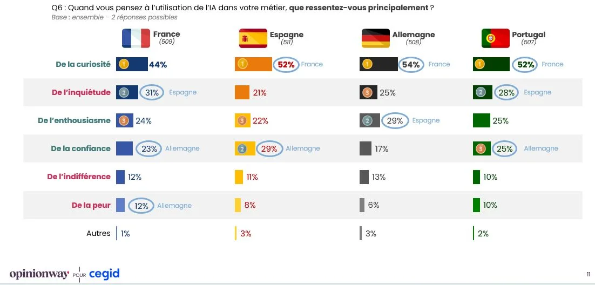
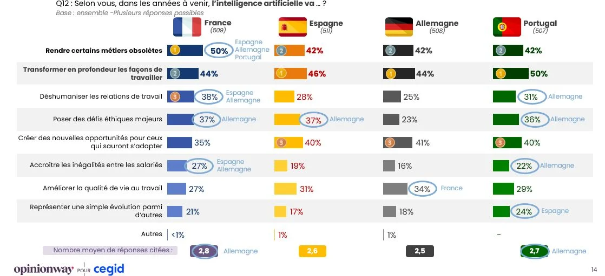
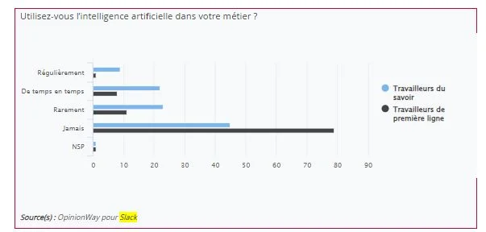

- 70 % des salariés français ont déjà utilisé l'IA au travail, et deux tiers des utilisateurs le font sans le dire
- OpenAI lance GPT-6 Astra, son premier modèle classé « critique » en cybersécurité
- OpenAI ouvre son API Agents et lance l'agent Data dans ChatGPT Work
- Revolut et Visa réalisent la première transaction agentique authentifiée par passkey en France
- Mon retour d'expérience : GPT-6 Astra contre Claude Fable 5.1 après dix jours de tests
 |
|---|
70 % des salariés français ont déjà utilisé l'IA au travail
L'étude « Le moment de vérité de l'IA en entreprise », réalisée par OpinionWay pour Cegid auprès de 2 004 salariés de bureau en France, en Espagne, au Portugal et en Allemagne, mesure que 70 % des salariés de bureau français ont déjà utilisé l'IA dans leur travail. C'est douze points de plus qu'en 2025, et toujours derrière le Portugal (84 %), l'Espagne (82 %) et l'Allemagne (75 %). L'usage régulier, lui, reste à 25 %, quand l'Espagne est passée à 40 %.
Le chiffre qui compte pour vous concerne le canal. Parmi les Français qui utilisent l'IA au travail, 67 % passent par des outils que leur entreprise ne fournit pas, sans en informer leur hiérarchie. Le phénomène monte à 81 % dans les ETI et 77 % dans les PME, contre 52 % dans les grandes entreprises. Ce sont les structures les plus avancées qui contournent le plus.
L'encadrement suit de loin : 37 % des salariés français seulement ont eu accès à une formation à l'IA proposée par leur employeur, 23 % affirment qu'aucun budget n'existe et 28 % ignorent la situation. Côté bénéfices, les utilisateurs estiment économiser cinq heures par semaine, trois heures en moyenne sur l'ensemble des salariés. Ces chiffres sont déclaratifs : ils mesurent une perception, pas une productivité.
Vos équipes utilisent donc déjà l'IA, avec leurs comptes personnels et sur vos fichiers. Deux décisions suffisent à reprendre la main : mettre à disposition un outil officiel, et écrire noir sur blanc ce qui a le droit d'y entrer. Une interdiction sèche déplace simplement l'usage vers le téléphone personnel.
Source : étude OpinionWay pour Cegid, présentée en septembre 2026.
| Rencontre sur l'IA en entreprise, publiée par OpinionWay |
|---|
{kind=link}
La REF 2026 · Photo publiée par OpinionWay
| Cadrer les usages avec une charte IA |
|---|
OpenAI lance GPT-6 Astra
OpenAI a lancé GPT-6 Astra le 3 septembre. Le modèle bascule vers l'exécution : il prend la main sur un navigateur et un poste de travail, enchaîne lui-même les manipulations et produit le livrable, au lieu d'expliquer comment le faire. Le déploiement s'est fait par étapes, des premières organisations partenaires aux abonnements ChatGPT Plus, Pro, Business et Enterprise, puis à l'API. OpenAI le présente comme son modèle le mieux aligné à ce jour ; son président Greg Brockman a parlé d'un saut de génération et a conclu sa présentation par « bienvenue dans l'ère de l'AGI ». C'est le discours de l'éditeur, à prendre comme tel.
Astra est le premier modèle que le laboratoire classe au niveau « critique » de sa propre échelle de risque en cybersécurité. Traduction : avec les bons outils, il sait repérer des failles inconnues et concevoir des attaques qui fonctionnent sur des systèmes bien protégés, sans qu'un humain guide chaque étape. C'est la raison pour laquelle la version grand public refuse les demandes cyber avancées ; les capacités complètes passent par un programme d'accès contrôlé, réservé à des organisations vérifiées.
Le même jour, OpenAI a annoncé « Daybreak for Frontline Defenders » : un milliard de dollars sur six mois, sous forme d'accès subventionné à ses modèles cyber, de support technique et de formation, au profit des équipes qui protègent l'eau, l'électricité, les collectivités, les banques régionales, les associations et les mainteneurs de logiciels libres. Le déploiement commence aux États-Unis. À noter : Astra lui-même n'était pas accessible d'emblée aux participants de ce programme, ce que plusieurs experts en sécurité ont relevé comme un déséquilibre entre ce qui est mis en circulation et ce qui est mis en défense.
Une IA qui pilote un navigateur et un poste de travail sort du cadre de vos règles d'usage actuelles, écrites pour du texte et des fichiers. Ce qu'un collaborateur a le droit de déléguer à une IA qui clique à sa place reste à écrire.
Sources : OpenAI, CNBC, The Register.
| GPT Astra, capture de la page officielle OpenAI |
|---|
{kind=link}
OpenAI ouvre son API Agents et lance l'agent Data dans ChatGPT Work
Le 10 septembre, OpenAI a mis son API Agents en bêta publique. Elle expose l'infrastructure qui fait tourner Codex : orchestration d'agents de longue durée, compaction automatique du contexte quand la session approche de sa limite, chargement des outils à la demande, appels d'outils en parallèle et délégation à des sous-agents qui travaillent en même temps. Elle accepte le protocole MCP, les fonctions maison et les outils intégrés comme la recherche web. L'environnement d'exécution est au choix : bac à sable hébergé par OpenAI, votre propre infrastructure, ou un partenaire (Cloudflare, Vercel, DigitalOcean, Modal, Oracle et d'autres). Aucun frais additionnel au-delà de la consommation des modèles, des outils et du calcul.
Dans le même mouvement, l'agent Data arrive dans ChatGPT Work sous forme de module à installer :
- Il se connecte aux sources validées par l'entreprise : Amazon Redshift, Google BigQuery, Snowflake, Databricks, MongoDB, ClickHouse, Datadog, ainsi qu'aux fichiers Google Drive et SharePoint.
- Il transforme une question posée en français en analyse, en diagnostic ou en tableau de bord interactif, sans écrire de requête, et sait aussi construire ces tableaux de bord dans Power BI, Tableau, Sigma, Oracle BI, Omni ou ThoughtSpot.
- Il s'appuie sur les définitions métier de l'entreprise pour interpréter les chiffres, et diffuse ses conclusions par courriel ou dans Slack.
- L'administrateur choisit les connexions disponibles et les rôles autorisés. Les requêtes respectent les droits du compte connecté, table par table, ligne par ligne, colonne par colonne.
Ce dernier point est celui qui décide de l'adoption chez vous. Un outil qui interroge vos données en respectant les habilitations existantes se déploie ; un outil qui les contourne se fait bloquer par la DSI, à raison. Avant de tester, vérifiez donc deux choses : que vos définitions métier sont écrites quelque part, et que vos droits d'accès sont propres. L'IA n'arbitrera pas à votre place ce que « chiffre d'affaires » veut dire dans votre entreprise.
Source : OpenAI.
| Tableau de bord de démonstration de l'agent Data |
|---|
{kind=link}
Première transaction payée par une IA en France
Le 7 septembre, Revolut et Visa ont annoncé avoir réalisé en France un paiement déclenché par une intelligence artificielle en conditions réelles. L'agent de test de Visa, « My Agent », a sélectionné un produit puis réglé l'achat chez le marchand européen Cleverbridge, avec une carte Revolut française destinée aux particuliers, l'authentification étant assurée par Visa Payment Passkey, une validation biométrique enregistrée sur l'appareil du porteur. Le règlement est passé par les rails habituels de Visa Intelligent Commerce, avec contrôles d'émetteur et surveillance de la fraude en temps réel. La formulation exacte des deux entreprises : c'est la première transaction agentique authentifiée par cette technologie en France.
Deux précisions qui changent la lecture. D'abord, il s'agit d'un pilote encadré dans le programme Agentic Ready de Visa, chez un seul marchand : rien n'est activé dans l'application Revolut et aucun service n'est ouvert à ses clients français. Ensuite, la France arrive après l'Europe. Santander et Mastercard avaient déjà réalisé le premier paiement agentique européen de bout en bout en mars, sur une infrastructure de production, et depuis juin l'ensemble des émetteurs Mastercard européens sont activés au niveau du réseau pour Agent Pay, Worldline et ING ayant mené la première transaction pleinement européenne en production. Le verrou technique se lève ; le verrou juridique, lui, tient : le droit européen des paiements ne prévoit aucun régime dédié, et la question de la responsabilité en cas d'achat non voulu reste ouverte.
L'achat déclenché par un agent vous concerne des deux côtés. Si vous vendez en ligne, vos fiches produit seront lues par des agents avant de l'être par des humains : données structurées, prix lisibles, conditions explicites. Côté paiement, Cleverbridge a dû s'équiper pour qu'un agent vérifié soit reconnu comme tel et non comme un robot suspect — c'est le chantier qui attend les commerçants. Si vous achetez, écrivez votre règle de délégation avant que quelqu'un l'essaie : quel montant, quel fournisseur, quelle validation humaine.
Sources : Visa France, Revolut, Mastercard, Worldline.
 |
|---|
 |
|---|
Le retour d'expérience du mois
GPT-6 Astra contre Claude Fable 5.1 : dix jours de tests en conditions réelles
Les deux laboratoires ont publié leur modèle phare à trois jours d'intervalle : Claude Fable 5.1 le 1er septembre, GPT-6 Astra le 3. Même tarif à l'API, dix dollars par million de tokens en entrée et cinquante en sortie.
Ce qui m'a impressionné chez GPT-6 Astra, c'est sa capacité à agir. Je lui demande quelque chose, il ouvre le site ou le service, prend la main et fait les manipulations. Il absorbe l'intégralité d'un site ou d'une base de connaissances en quelques secondes. Sa finesse de rédaction a nettement progressé. Claude Fable 5.1 m'a semblé plus limité sur cette partie.
Les benchmarks publiés vont dans le même sens, à condition de regarder qui les publie. Sur les tests d'automatisation de tâches administratives, OpenAI mesure Astra à 41 % de réussite contre 31 % pour Fable 5.1. L'évaluateur indépendant Artificial Analysis, lui, place Fable 5.1 devant sur ses deux indices principaux, et Fable reprend la tête sur les épreuves de raisonnement outillé. Retenez surtout l'ordre de grandeur : 41 % de réussite, cela veut dire que six enchaînements sur dix échouent encore. C'est le chiffre à garder en tête quand un éditeur vous parle d'automatiser un métier.
Deux réserves de mon côté. La consommation d'abord : avec le forfait de base, le quota part très vite et j'ai dû passer à la formule supérieure. Fable consomme aussi, avec l'impression d'aller plus loin avant d'atteindre la limite. La précision ensuite : Claude reste parfois plus subtil quand il analyse un texte ou un processus, là où Astra prend des raccourcis. Cette finesse compte dans mon travail.
Un détail technique explique une partie de mon ressenti sur Fable. Anthropic ne publie pas son modèle le plus capable — Mythos 5.1 va à des partenaires sélectionnés, le public reçoit Fable 5.1, la version filtrée — et les requêtes qui touchent à la cybersécurité ou à la biologie peuvent être refusées ou redirigées vers un modèle inférieur. Ce que je prenais pour une limite de capacité était parfois un garde-fou. À l'inverse, Astra bride aussi ses capacités cyber dans sa version publique. Aucun des deux ne vous donne accès à ce qu'il sait vraiment faire.
Mon conseil : si vos documents, vos consignes et vos habitudes de travail sont déjà installés dans un outil, ne cédez pas au chant des sirènes à chaque nouvelle version. Testez les deux sur vos tâches réelles, avec les mêmes documents et les mêmes exigences. Comparez la qualité des résultats, le temps passé à les corriger et les limites rencontrées. Un changement doit valoir le temps que vous passerez à tout remettre en place.
Le comparatif détaillé et les réactions sont sur mon profil LinkedIn. Si vous hésitez sur l'outil à installer chez vous, échangeons 30 minutes sur vos usages réels.